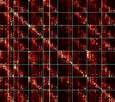
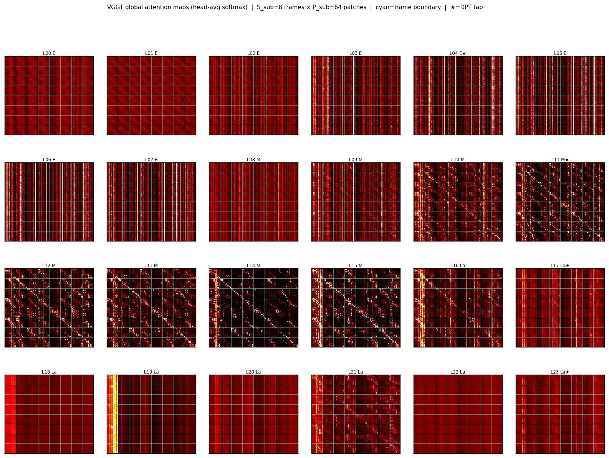

개요
VGGT 같은 video-to-3D foundation model은 모든 입력 프레임을 한 번에 attention해서 최고 수준의 3D 복원 성능을 냅니다. 하지만 이 global attention의 비용은 시퀀스 길이에 대해 제곱으로 늘어나서, 16 GB GPU에서는 30프레임 정도면 메모리가 바닥납니다. TTM (Temporal Token Merging)은 추가 학습 없이 붙일 수 있는 애드온으로, 세 가지 기법을 조합해 프레임 간 attention을 압축합니다.
- M1Layer-Selective Storage: prediction head가 실제로 읽는 4개 레이어의 중간 특징만 저장해서, 저장되는 activation의 약 80%를 없앱니다.
- M2KV-Asymmetric Merge: query는 전체 해상도 그대로 두고 key/value만 merge된 토큰으로 계산합니다. 오류가 생기기 쉬운 unmerge 단계가 없어지고, 토큰 오염도 구조적으로 막힙니다.
- M5Epipolar-Constrained Merge: 같은 모델을 저해상도로 한 번 더 돌려 얻은 카메라 pose로 epipolar 거리를 계산하고, epipolar line 근처의 패치만 merge 후보로 남깁니다.
모든 구성 요소는 VGGT의 가중치를 그대로(frozen) 재사용하므로 fine-tuning이 필요 없고, FlashAttention 같은 효율적인 attention 커널과 함께 쓸 수 있습니다.
아이디어
VGGT는 원래 이미지 사이의 시간 정보 없이도 동작하는 모델입니다. 입력 순서를 섞어도 되는 이미지 묶음으로 취급하죠. 하지만 실제 입력이 영상이라면 상황이 다릅니다. 이웃한 프레임은 거의 같은 장면을 보고 있고, 그만큼 토큰도 중복됩니다. 이 중복을 찾아 압축하면, 품질은 유지하면서 메모리와 추론 시간을 줄일 수 있지 않을까요?
실제로 VGGT의 global attention map을 그려 보면, 중간 레이어에서 각 query가 다른 프레임의 같은 위치 패치에 강하게 attention하는 대각선 패턴이 프레임마다 반복됩니다(아래 attention map). 모델 스스로 프레임 간 대응 관계를 찾고 있다는 뜻이고, 그만큼 프레임 사이의 토큰이 중복된다는 근거가 됩니다.
영상은 이미지 시퀀스입니다. 이웃한 프레임끼리는 시차만 조금 있을 뿐 대부분의 패치가 거의 같습니다.
같은 3D 점은 다음 프레임의 epipolar line 위에 찍힙니다. 이 제약으로 비슷하게 생긴 엉뚱한 패치를 걸러내고 진짜 짝만 압축합니다.
epipolar line을 그리려면 pose가 필요합니다. 아주 낮은 해상도로 VGGT를 한 번 먼저 돌려 대략적인 pose를 얻고, 이 정보로 이웃 프레임 패치 사이의 대응을 알려줍니다.
찾은 짝 패치를 merge해 key/value를 줄입니다. query는 그대로 두므로 출력 해상도는 유지되고, 메모리와 추론 시간만 줄어듭니다.
메모리의 벽
VGGT는 frame attention(한 이미지 안의 토큰끼리)과 global attention(S개 프레임의 모든 토큰 N = S\cdot P개 전체)을 번갈아 수행합니다. global attention 덕분에 여러 시점의 예측이 서로 일관되지만, score 행렬 크기가 N\times N이라 프레임 수가 2배가 되면 비용은 4배가 됩니다. 아래 슬라이더로 518 px 입력(P = 1369개 패치 + 특수 토큰 5개)에서 행렬이 얼마나 커지는지 확인해 보세요.
merge가 적용된 global 레이어 1개, head 1개 기준으로 attention score 개수를 해석적으로 계산한 값입니다(BF16). 모든 프레임이 각각 n개씩 빼므로 Nred = S(P − n)입니다. FlashAttention 같은 커널은 이 행렬을 메모리에 다 올리지 않지만, 연산량은 똑같이 늘어나고 TTM의 절감 효과는 그런 커널의 효과와 곱해집니다.
방법
TTM은 VGGT의 alternating-attention 루프만 건드립니다. 프레임 토큰화는 그대로 하고, 24개 블록 중 5번 이후의 tap이 아닌 레이어는 global attention에서 merge된 key/value를 씁니다. DPT head가 읽는 4개 레이어만 저장하고, 필요하면 저해상도 pre-pass로 카메라 pose를 구해 epipolar 후보 제한에 사용합니다.
프레임 간 bipartite token merging
각 프레임 t는 바로 다음 프레임 t{+}1을 reference로 삼습니다(마지막 프레임은 t{-}1). VGGT 자체의 frozen key projection으로 패치 토큰을 투영하고 L2 정규화한 뒤, frame t의 짝수 인덱스 source 토큰마다 frame t{+}1에서 가장 비슷한 토큰을 찾습니다.
유사도가 가장 높은 n개의 source를 merge합니다. 유사도를 attention 자체의 key 공간에서 계산하므로 별도 네트워크가 필요 없습니다. merge 방식은 hard-kept를 씁니다. 두 토큰을 평균내는 soft 방식은 frame t{+}1의 내용이 frame t의 자리로 새어 들어가 depth가 흐려지기 때문입니다. 모든 프레임이 같은 개수 n을 빼서 merge 후에도 텐서 모양이 깔끔하게 유지되고, 매칭 비용은 프레임 수에 선형입니다. 같은 merge 인덱스를 여러 레이어에서 재사용(index caching)할 수도 있습니다.
M2 KV-Asymmetric Merge: unmerge가 필요 없는 attention
일반적인 방식은 merge → attention → unmerge입니다. 줄어든 시퀀스를 attention 뒤에 원래 위치로 다시 뿌려야 하는데, 이 과정에서 frame t{+}1의 특징이 frame t의 위치에 섞여 들어갑니다. 그런데 제곱 비용은 query 길이가 아니라 key/value 길이에서 생깁니다. query 하나는 key를 몇 개 보든 출력을 정확히 하나 만듭니다. 그래서 query는 전체 시퀀스에서, key/value는 merge된 시퀀스에서 계산합니다.
출력이 처음부터 원래 토큰마다 한 행씩 있으므로, head는 기대하던 형태 그대로 입력을 받습니다. 비용은 O((SP)^2)에서 O(SP\cdot N_{\text{red}})로 줄어듭니다. 구현에서는 W_K와 W_V를 하나의 행렬로 합쳐 X_{\text{red}}에 한 번만 곱하고, 결과를 나눠 K와 V를 얻습니다.
해상도가 유지된다는 것
merge→unmerge 방식에서는 제거된 패치가 이웃 프레임 짝의 특징을 복사해 받습니다. 이웃 프레임은 시차만큼 어긋나 있으므로, merge할수록 그 패치의 세부 정보가 뭉개지고 경계가 어긋납니다. KV-asymmetric 방식에서는 모든 패치가 자기 query를 그대로 가지고 줄어든 K/V에서 문맥만 가져오기 때문에, 패치마다 고유한 출력이 나오고 공간 해상도가 그대로 유지됩니다.
개념 시각화입니다. 합성 장면의 depth로 그렸으며 실제 모델 출력이 아닙니다. 빗금 친 패치는 frame t에서 K/V로부터 제거된 패치이고, merge→unmerge 출력에서는 그 자리에 frame t와 t+1의 짝 패치를 섞은 값이 들어갑니다.
관련 방법과의 차이
| LiteVGGT | Spark3R | TTM (Ours) | |
|---|---|---|---|
| Symmetric merge | 예 | 아니오 | 아니오 |
| Query도 merge | 예 | 예 (프레임 그룹 내부) | 아니오 |
| Unmerge 필요 | 예 | 예 | 아니오 |
| 추가 학습 | 필요 | 불필요 | 불필요 |
M1 Layer-Selective Storage
VGGT는 head를 위해 24개 블록의 출력을 모두 저장하지만, DPT depth/point head는
\mathcal T = \{4, 11, 17, 23\}만 읽고 camera head는 마지막 레이어만 읽습니다.
나머지 20개를 None으로 저장하는 한 줄 수정만으로 S=20에서 약 870 MB가 절약되고,
절약량은 S에 비례해 커지며, 출력은 비트 단위로 동일합니다.
M5 Epipolar-Constrained Merge
겉모양만으로는 짝이 모호합니다. 똑같은 창문이 늘어선 건물 벽면에는 비슷해 보이는 key가 수없이 많습니다. 하지만 기하는 모호하지 않습니다. 어떤 패치의 진짜 짝은 다음 프레임에서 반드시 그 패치의 epipolar line 위에 있어야 합니다. M5는 매칭 후보를 이 직선 주변의 band 안으로 제한하고, band 안에서만 겉모양(cosine 유사도)으로 짝을 고릅니다. 기하가 검색 범위를 1차원으로 좁히고, 겉모양이 그 위에서 짝을 가려내는 구조입니다.
후보를 제한해도 merge 개수 n은 그대로라서 메모리와 연산량은 M1+M2와 같고, 어떤 패치를 합칠지만 더 정확해집니다. ablation으로 거리에 따라 유사도를 연속적으로 줄이는 soft gate s_{ij}\cdot\exp(-d_{\text{epi}}^2/\sigma^2)도 구현해 비교했습니다.
pose는 VGGT 자신에게서 얻습니다. 224 px로 돌리는 Pass 0(M1+M2를 적용한 TTM)은 본 추론의 약 1/10 시간이 걸리고, 여기서 얻은 pose로 F를 만든 뒤 518 px로 돌리는 Pass 1의 20개 merge 레이어가 모두 같은 band mask를 공유합니다. band가 충분히 넓으면 제약이 사라져 M5는 M1+M2와 같아집니다. pose가 퇴화된 경우(움직임 없음)에도 제약 없이 M1+M2로 돌아갑니다. 왼쪽 프레임의 패치에 마우스를 올려 보세요.
결과
Tanks and Temples training set 5개 장면, H100 1장, BF16 기준입니다. 장면별 threshold의 ×5 / ×10에서의 복원 F1, pose AUC@30°, forward pass 시간, 최대 GPU 메모리를 비교했습니다.
전체 표 보기
시간은 어디에 쓰이나
Ignatius 장면(263프레임, H100, BF16)의 실행 시간 분해입니다. epipolar pre-pass는 선택 사항이고, 핵심 방법만 쓰면 13.5초가 걸립니다.
후속 실험: 레이어마다 merge 예산을 다르게 줘야 할까?
중간 깊이(L11–L15)의 global block에서는 attention이 유독 heterogeneous합니다. query마다 서로 다른 소수의 key에 집중합니다. 이를 attention map 한 번의 forward로 측정하는 heterogeneity probe(query별 coverage c_\pi)를 만들고, 이 구간에서 merge를 줄이는 레이어별 배율 r^{(\ell)} = \alpha_\ell\, r_{\max}을 실험했습니다.

VGGT-1B의 실제 global attention map입니다(head 평균, softmax). 8개 프레임 × 프레임당 64개 패치를 뽑아 그렸고, 청록색 선이 프레임 경계이고, 행은 query, 열은 key입니다. 레이어마다 색 범위가 다를 수 있으니 레이어끼리 절대값을 비교하지는 마세요. 고해상도 원본은 주대각선(자기 자신)이 색 범위를 차지해 프레임 간 패턴이 흐리게 보일 수 있습니다.
24개 레이어 한눈에 보기

결과는 기대와 달랐습니다. 중간 구간의 heterogeneity 자체는 재현됐지만, 1-pass probe 점수와 실제로 측정한 레이어 민감도의 상관은 Spearman ρ = 0.23으로 약했습니다. 스케줄을 바꿔도 Tanks and Temples 평균 F1@×5는 0.2 이내로 거의 같았습니다 (uniform 54.63, mid-conservative 54.55, mid-aggressive 54.41, U-shape 54.61). 즉 KV-asymmetric merge는 어느 레이어에 적용하는지에 둔감하고, 스케줄의 모양보다 전체 예산이 더 중요했습니다.
한계
- merge는 시간적 중복에 의존하므로, 시점 차이가 큰 희소한 이미지 집합에서는 합칠 토큰이 적습니다.
- DPT tap 레이어는 full attention을 유지하므로 이 레이어들의 비용은 줄지 않습니다.
- M5는 저해상도 forward를 한 번 더 수행합니다. 상대 pose가 퇴화된 경우 제약 없이 일반 매칭으로 돌아갑니다.